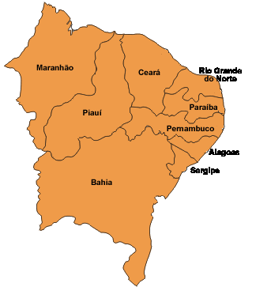

Compõem-se dos estados: Maranhão, Piaui, Ceará, Rio Grande do Norte, Paraiba, Pernambuco, Alagoas, Sergipe e Bahia. Possui um território de 1.556.001km 2 (18,2% do território nacional), dentro dos quais está localizado o Poligano das secas.
